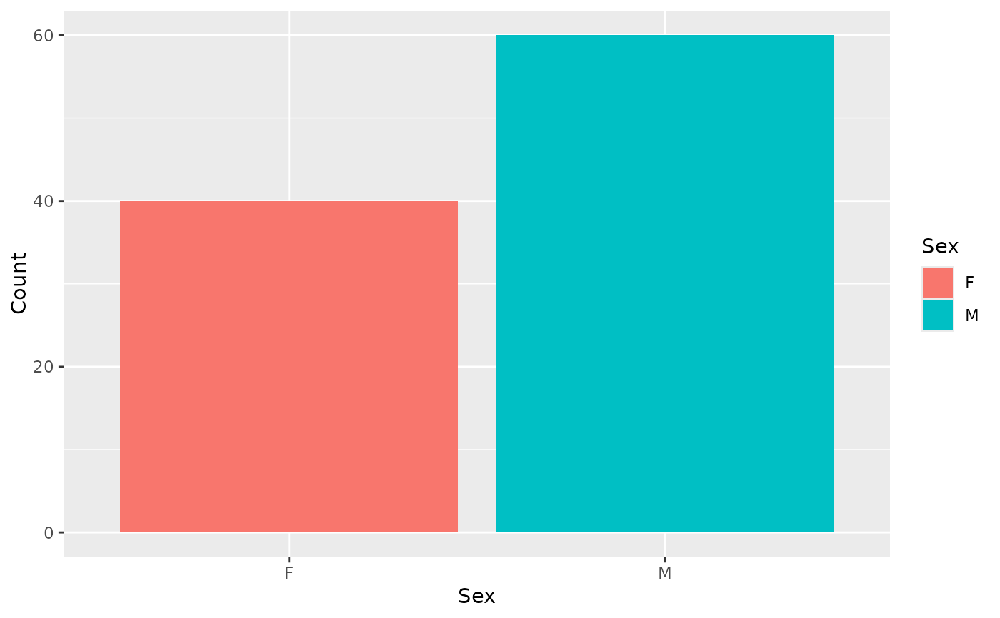
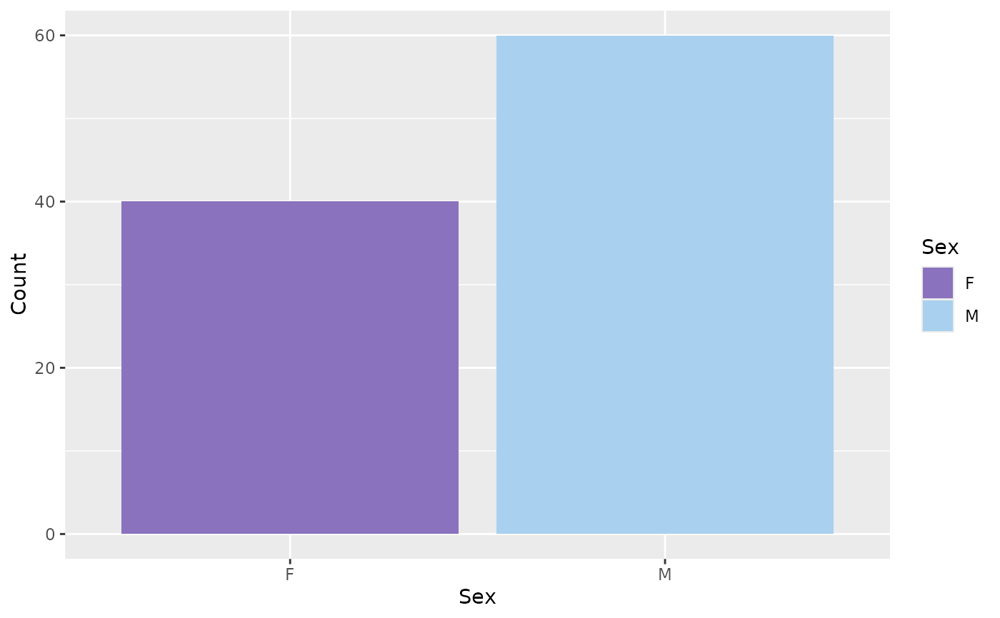

HPA fill scales
scale_fill_hpa.Rdscale_fill_hpa() creates a ggplot2 scale for fill aesthetics using the color
palettes from the Human Protein Atlas (HPA) project.
Arguments
- palette
The name of the palette to use. It should be one of the palettes from
get_hpa_palettes().
Examples
# Create an example dataframe
data <- data.frame(
Sex = c("M", "F"),
Count = c(60, 40)
)
# Create a plot
plot <- ggplot2::ggplot(data, ggplot2::aes(x = Sex, y = Count, fill = Sex)) +
ggplot2::geom_bar(stat = "identity", position = "dodge")
plot

# Add a custom palette
plot + scale_fill_hpa("sex_hpa")
